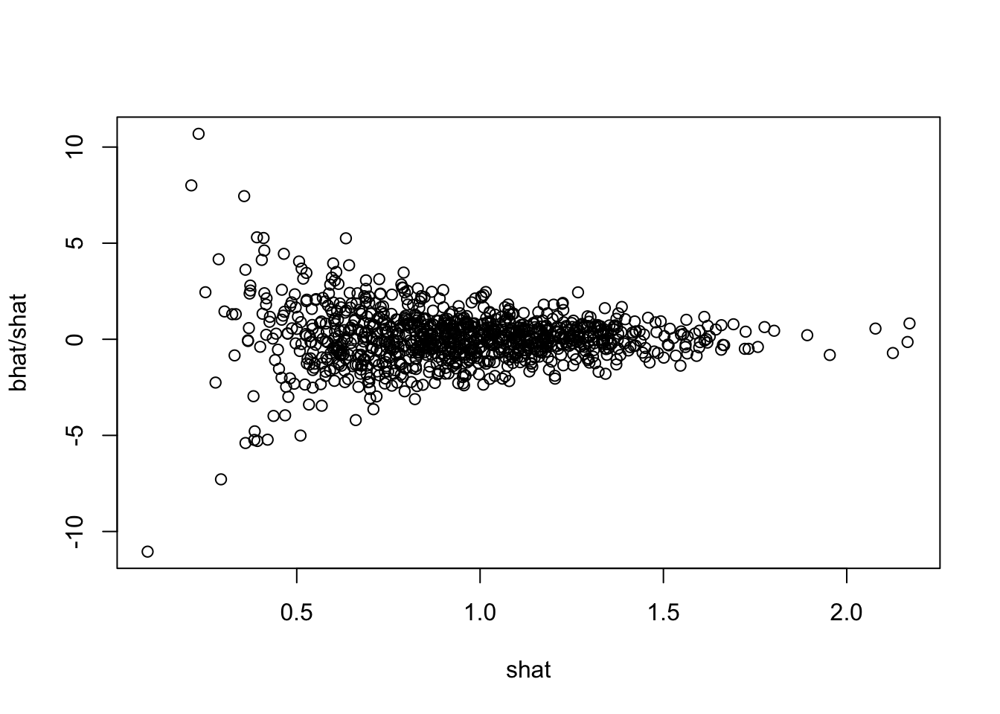
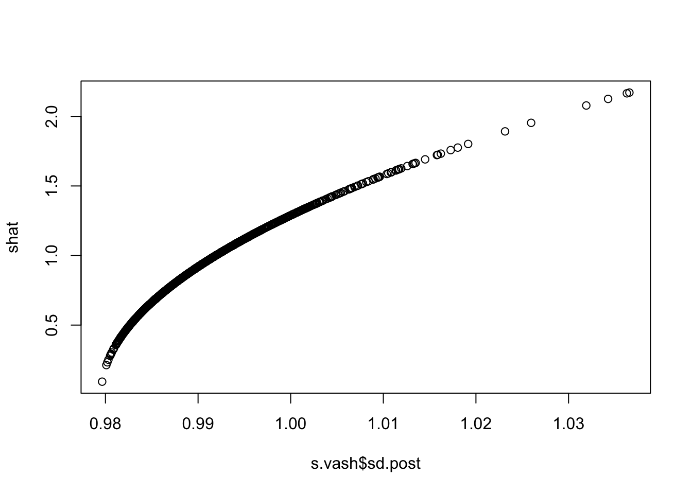

Last updated: 2018-08-27
workflowr checks: (Click a bullet for more information) ✔ R Markdown file: up-to-date
Great! Since the R Markdown file has been committed to the Git repository, you know the exact version of the code that produced these results.
✔ Environment: empty
Great job! The global environment was empty. Objects defined in the global environment can affect the analysis in your R Markdown file in unknown ways. For reproduciblity it’s best to always run the code in an empty environment.
✔ Seed:
set.seed(12345)
The command set.seed(12345) was run prior to running the code in the R Markdown file. Setting a seed ensures that any results that rely on randomness, e.g. subsampling or permutations, are reproducible.
✔ Session information: recorded
Great job! Recording the operating system, R version, and package versions is critical for reproducibility.
✔ Repository version: 34bda15
wflow_publish or wflow_git_commit). workflowr only checks the R Markdown file, but you know if there are other scripts or data files that it depends on. Below is the status of the Git repository when the results were generated:
Ignored files:
Ignored: .DS_Store
Ignored: .Rhistory
Ignored: .Rproj.user/
Ignored: analysis/.RData
Ignored: analysis/.Rhistory
Ignored: analysis/ALStruct_cache/
Ignored: data/.Rhistory
Ignored: docs/figure/.DS_Store
Untracked files:
Untracked: .dropbox
Untracked: Icon
Untracked: _workflowr.yml
Untracked: analysis/GTEX-cogaps.Rmd
Untracked: analysis/SPCAvRP.rmd
Untracked: analysis/eQTL.perm.rand.pdf
Untracked: analysis/ieQTL.perm.rand.pdf
Untracked: analysis/mash_bhat_z.Rmd
Untracked: analysis/mash_ieqtl_permutations.Rmd
Untracked: analysis/sc_bimodal.Rmd
Untracked: analysis/susie_example.Rmd
Untracked: analysis/test_sparse.Rmd
Untracked: analysis/z.txt
Untracked: code/multivariate_testfuncs.R
Untracked: data/4matthew/
Untracked: data/4matthew2/
Untracked: data/E-MTAB-2805.processed.1/
Untracked: data/ENSG00000156738.Sim_Y2.RDS
Untracked: data/GDS5363_full.soft.gz
Untracked: data/GSE41265_allGenesTPM.txt
Untracked: data/Muscle_Skeletal.ACTN3.pm1Mb.RDS
Untracked: data/Thyroid.FMO2.pm1Mb.RDS
Untracked: data/bmass.HaemgenRBC2016.MAF01.Vs2.MergedDataSources.200kRanSubset.ChrBPMAFMarkerZScores.vs1.txt.gz
Untracked: data/bmass.HaemgenRBC2016.Vs2.NewSNPs.ZScores.hclust.vs1.txt
Untracked: data/bmass.HaemgenRBC2016.Vs2.PreviousSNPs.ZScores.hclust.vs1.txt
Untracked: data/finemap_data/fmo2.sim/b.txt
Untracked: data/finemap_data/fmo2.sim/dap_out.txt
Untracked: data/finemap_data/fmo2.sim/dap_out2.txt
Untracked: data/finemap_data/fmo2.sim/dap_out2_snp.txt
Untracked: data/finemap_data/fmo2.sim/dap_out_snp.txt
Untracked: data/finemap_data/fmo2.sim/data
Untracked: data/finemap_data/fmo2.sim/fmo2.sim.config
Untracked: data/finemap_data/fmo2.sim/fmo2.sim.k
Untracked: data/finemap_data/fmo2.sim/fmo2.sim.k4.config
Untracked: data/finemap_data/fmo2.sim/fmo2.sim.k4.snp
Untracked: data/finemap_data/fmo2.sim/fmo2.sim.ld
Untracked: data/finemap_data/fmo2.sim/fmo2.sim.snp
Untracked: data/finemap_data/fmo2.sim/fmo2.sim.z
Untracked: data/finemap_data/fmo2.sim/pos.txt
Untracked: data/logm.csv
Untracked: data/m.cd.RDS
Untracked: data/m.cdu.old.RDS
Untracked: data/m.new.cd.RDS
Untracked: data/m.old.cd.RDS
Untracked: data/mainbib.bib.old
Untracked: data/mat.csv
Untracked: data/mat.txt
Untracked: data/mat_new.csv
Untracked: data/paintor_data/
Untracked: data/temp.txt
Untracked: data/y.txt
Untracked: data/y_f.txt
Untracked: docs/figure/eigen.Rmd/
Untracked: docs/figure/fmo2.sim.Rmd/
Untracked: docs/figure/newVB.elbo.Rmd/
Untracked: docs/figure/rbc_zscore_mash2.Rmd/
Untracked: docs/figure/rbc_zscore_mash2_analysis.Rmd/
Untracked: docs/figure/rbc_zscores.Rmd/
Untracked: docs/trend_files/
Untracked: docs/z.txt
Untracked: explore_udi.R
Untracked: output/fit.varbvs.RDS
Untracked: output/glmnet.fit.RDS
Untracked: output/test.bv.txt
Untracked: output/test.gamma.txt
Untracked: output/test.hyp.txt
Untracked: output/test.log.txt
Untracked: output/test.param.txt
Untracked: output/test2.bv.txt
Untracked: output/test2.gamma.txt
Untracked: output/test2.hyp.txt
Untracked: output/test2.log.txt
Untracked: output/test2.param.txt
Untracked: output/test3.bv.txt
Untracked: output/test3.gamma.txt
Untracked: output/test3.hyp.txt
Untracked: output/test3.log.txt
Untracked: output/test3.param.txt
Untracked: output/test4.bv.txt
Untracked: output/test4.gamma.txt
Untracked: output/test4.hyp.txt
Untracked: output/test4.log.txt
Untracked: output/test4.param.txt
Untracked: output/test5.bv.txt
Untracked: output/test5.gamma.txt
Untracked: output/test5.hyp.txt
Untracked: output/test5.log.txt
Untracked: output/test5.param.txt
Unstaged changes:
Modified: analysis/_site.yml
Deleted: analysis/chunks.R
Modified: analysis/eigen.Rmd
Modified: analysis/fmo2.sim.Rmd
Modified: analysis/newVB.Rmd
I want to illustrate the fact that \[\hat\beta/\hat{s} \sim t\] does not imply \[\hat\beta/\hat{s} | \hat{s} \sim t.\]
Consider even the simplest case of true \(s_j=1\) and \(\beta=0\) (and df of \(d=5\)). So \[\hat{\beta} \sim N(0,1)\] and \[\hat{s}^2 \sim \chi_d^2/d.\]
bhat = rnorm(1000)
d=5
shat = sqrt(rchisq(1000,df=d)/d)
plot(shat,bhat/shat)
| Version | Author | Date |
|---|---|---|
| 48b97b0 | stephens999 | 2018-08-24 |
In fact, it should be obvious in this case that \[\hat{\beta}/\hat{s} | \hat{s} \sim N(0, \hat{s}^{-2})\]
Apply ash:
library("ashr")
b.ash = ash(bhat,shat,df=5)
sum(get_lfsr(b.ash)<0.05)[1] 4Now try shrinking variances first:
library("vashr")Loading required package: SQUAREMLoading required package: qvalues.vash = vash(shat,df=5,singlecomp = TRUE)
plot(s.vash$sd.post, shat)
| Version | Author | Date |
|---|---|---|
| 48b97b0 | stephens999 | 2018-08-24 |
b.ash2 = ash(bhat,s.vash$sd.post,df=2*s.vash$PosteriorShape[1])
sum(get_lfsr(b.ash2)<0.05)[1] 0sessionInfo()R version 3.5.1 (2018-07-02)
Platform: x86_64-apple-darwin15.6.0 (64-bit)
Running under: OS X El Capitan 10.11.6
Matrix products: default
BLAS: /Library/Frameworks/R.framework/Versions/3.5/Resources/lib/libRblas.0.dylib
LAPACK: /Library/Frameworks/R.framework/Versions/3.5/Resources/lib/libRlapack.dylib
locale:
[1] en_US.UTF-8/en_US.UTF-8/en_US.UTF-8/C/en_US.UTF-8/en_US.UTF-8
attached base packages:
[1] stats graphics grDevices utils datasets methods base
other attached packages:
[1] vashr_0.99.1 qvalue_2.6.0 SQUAREM_2017.10-1 ashr_2.2-7
loaded via a namespace (and not attached):
[1] Rcpp_0.12.18 bindr_0.1.1 pillar_1.3.0
[4] plyr_1.8.4 compiler_3.5.1 git2r_0.23.0
[7] workflowr_1.1.1 R.methodsS3_1.7.1 R.utils_2.6.0
[10] iterators_1.0.10 tools_3.5.1 digest_0.6.16
[13] etrunct_0.1 tibble_1.4.2 evaluate_0.11
[16] gtable_0.2.0 lattice_0.20-35 pkgconfig_2.0.2
[19] rlang_0.2.2 Matrix_1.2-14 foreach_1.4.4
[22] yaml_2.2.0 parallel_3.5.1 bindrcpp_0.2.2
[25] dplyr_0.7.6 stringr_1.3.1 knitr_1.20
[28] REBayes_1.3 tidyselect_0.2.4 rprojroot_1.3-2
[31] grid_3.5.1 glue_1.3.0 R6_2.2.2
[34] rmarkdown_1.10 reshape2_1.4.3 purrr_0.2.5
[37] ggplot2_3.0.0 magrittr_1.5 whisker_0.3-2
[40] splines_3.5.1 backports_1.1.2 scales_1.0.0
[43] codetools_0.2-15 htmltools_0.3.6 MASS_7.3-50
[46] assertthat_0.2.0 colorspace_1.3-2 stringi_1.2.4
[49] Rmosek_8.0.69 lazyeval_0.2.1 doParallel_1.0.11
[52] pscl_1.5.2 munsell_0.5.0 truncnorm_1.0-8
[55] crayon_1.3.4 R.oo_1.22.0
This reproducible R Markdown analysis was created with workflowr 1.1.1